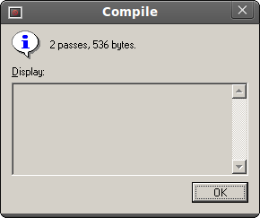

Lesson 3
For the DexBasic for the raspberry pi
OK in this DexBasic lesson i will demo using the GPIO pins, lucky for us one of
these GPIO is conected to the green OK led, so we can use that to test our code.
For this we will do what is the equivalent in the electronics world of the "hello world", that is a blinking led.
So unzip Tut3. then go to Tut3 folder and click on the "FASMWARM.EXE" in side that
folder, than as before click on file, then open and load the app.asm
file into the IDE
You should see this:
w if
Let take a closer look at each bit and expain what it does.
The first bit is the Comments, which is text that is not used by the
DexBasic, its only there to help humans like us understand whats going
on. You can tell if something is a comment because there is a ;
at the beginning . Anything after the ; is ignored by
the DexBasic (fasm) on that row. In this example the person who wrote
the comment decided to make it look pretty and add *'s down the side
but this isn't necessary.
Comments are very useful and I strongly encourage every DexBasic app
you make have a comment in the beginning with information like who
wrote it, when you wrote it and what its supposed to do.
After the above comments you will see this:
This needs to be the first thing after any comments and is need in
every DexBasic app you write, it set stuff up and is where our macros
are stored.
Then we have this:
This sets the gpio number 16 as a output.
Next we have:
This is a simple label, that we can use to jump back to if we want to repeat the
code after it.
Then we have:
This makes gpio number 16 go high, which in this case turns the led on.
Next we have this:
This bit of code delays before moving on to the next bit of code, in this case for one second.
You may of noticed that this delay function is different from the delay we used in some of the other tuorials, this is a more accurate one, not needed in this case, but i thought i would introduce you to this very useful function.
Next we have this code:
This set gpio 16 low or in this case turns the led off.
Next we have another one second delay:
After that we have a goto:
which as you should know by now will jump back to the label:
Which will repeat the code after that.
Next we have this:
Which is put at end of our program, so we know the size of it.
Next is this:
This is the address of our off screen buffer.
Now all we need to do is click on run then compile and we should see
this:

It will say a differant size, but thats ok.
Next we goto "file" and then "open" then we click on "kernel.asm" and
"open" than as before, we click "Run" then "compile".
Once we see the above box, we are ready to test it on the PI.
So take the kernel.img file you have just made ( it will be in the Tut3
folder) and put it on the SD card (replacing the one thats you put on
earlier).
Put it in your raspberry pi and power it up.
You should see the green OK led flash on and off every second:
And that's all folks for Tut 3